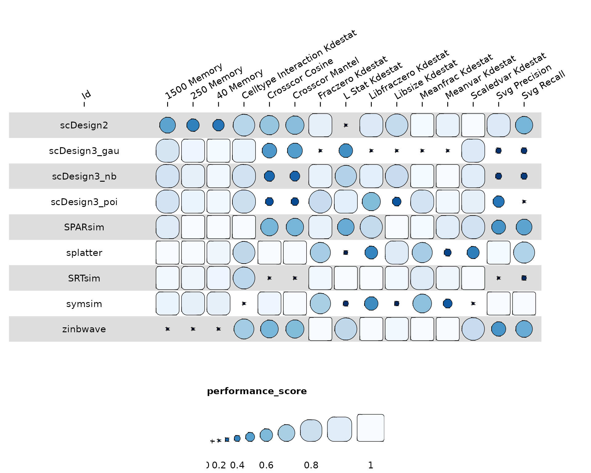
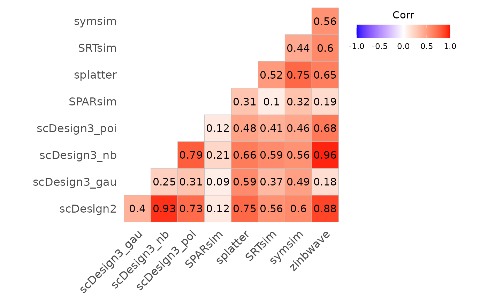
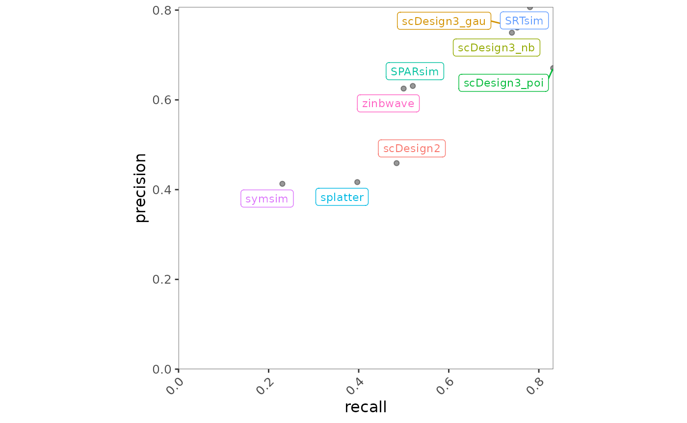
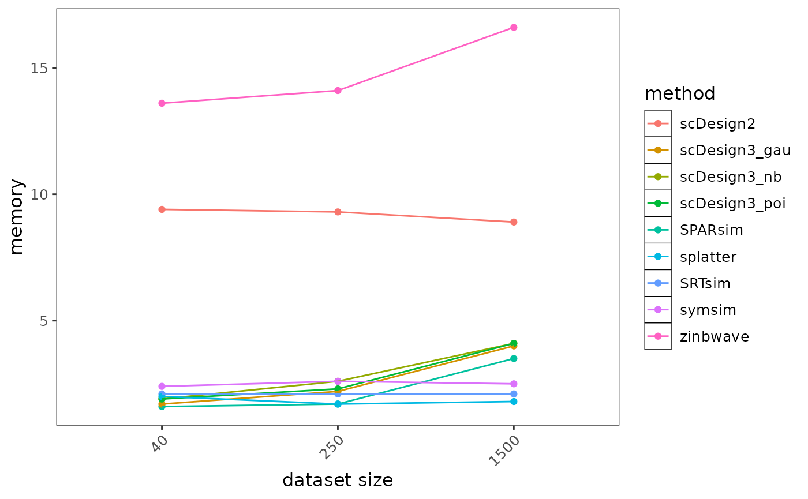
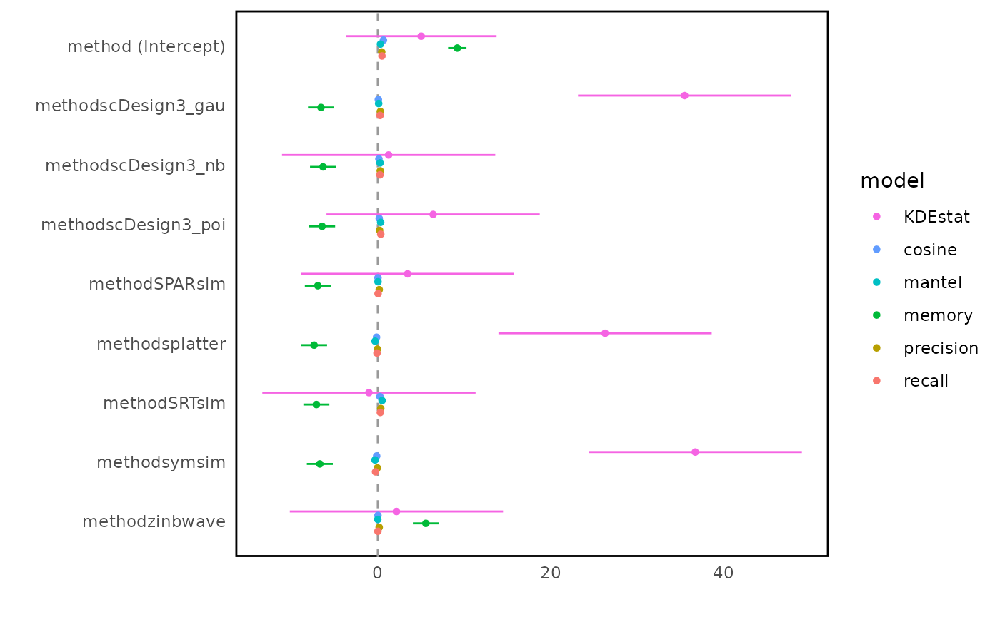
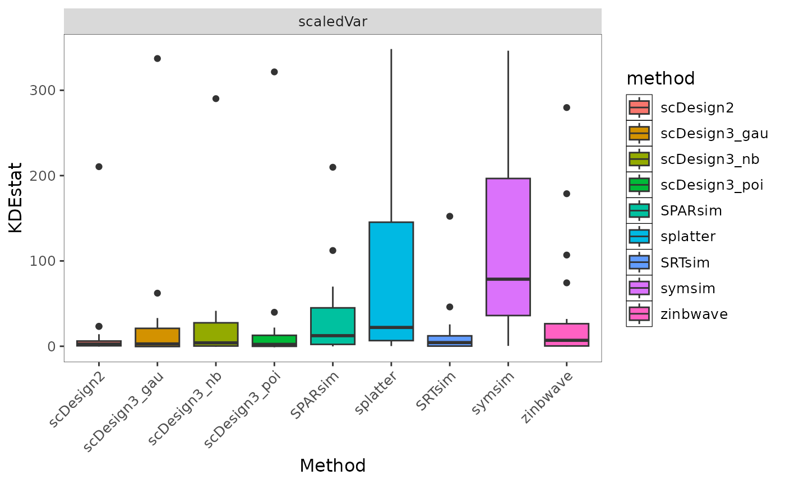

Motivation
BenchHub—an R ecosystem to make benchmarking easier. It organizes evaluation metrics, gold standards (Supporting Evidence), and even provides built-in visualization tools to help interpret results. With BenchHub, researchers can quickly compare new methods, gain insights, and actually trust their benchmarking studies. In this vignette, we are going to introduce BenchmarkInsights class.
In this vignette, we use a subset of results generated under the SpatialSimBench framework as a case study. SpatialSimBench benchmarks spatial transcriptomics simulation methods across ten spatially resolved transcriptomics datasets using multiple evaluation metrics. The subset considered here includes simulations from scDesign2, scDesign3 (across three distributions), SPARsim, splatter, SRTsim, symsim, and ZINB-WaVE, evaluated across tasks covering data properties, spatial downstream analyses, and scalability. These results are used to illustrate downstream analysis and interpretation.
Creating BenchmarkInsights class
BenchmarkInsights objects can be created using the
corresponding constructor. For example, if you have a benchmark result
formatted in dataframe, you can create a BenchmarkInsights
object as follows. The dataframe includes fixed name columns:
datasetID, method, evidence,
metric, and result. Here I will use the
benchmark result from SpatialSimBench to create a new object.
result_path <- system.file("extdata", "spatialsimbench_result.csv", package = "BenchHub")
spatialsimbench_result <- read_csv(result_path)
glimpse(spatialsimbench_result)## Rows: 1,260
## Columns: 5
## $ datasetID <chr> "BREAST", "HOSTEOSARCOMA", "HPROSTATE", "MBRAIN", "MCATUMOR"…
## $ method <chr> "scDesign2", "scDesign2", "scDesign2", "scDesign2", "scDesig…
## $ evidence <chr> "scaledVar", "scaledVar", "scaledVar", "scaledVar", "scaledV…
## $ metric <chr> "KDEstat", "KDEstat", "KDEstat", "KDEstat", "KDEstat", "KDEs…
## $ result <dbl> -0.18447837, 3.33680301, 6.95418978, 0.62077112, 0.34212005,…If you use trio$evaluation(), the output will be
automatically formatted as the required dataframe. However, if you use
your own benchmark evaluation results, you ensure they adhere to the
expected format.
bmi <- BenchmarkInsights$new(spatialsimbench_result)
bmi## <BenchmarkInsights>
## Public:
## addevalSummary: function (additional_evalResult)
## addMetadata: function (metadata)
## clone: function (deep = FALSE)
## evalSummary: spec_tbl_df, tbl_df, tbl, data.frame
## getBoxplot: function (metricVariable, evidenceVariable)
## getCorplot: function (input_type)
## getForestplot: function (input_group, input_model)
## getHeatmap: function ()
## getLineplot: function (order = NULL, metricVariable)
## getScatterplot: function (variables)
## initialize: function (evalResult = NULL)
## metadata: NULLIf you have additional evaluation result, you can use
addevalSummary(). Here is the example:
add_result <- data.frame(
datasetID = rep("BREAST", 9),
method = c(
"scDesign2", "scDesign3_gau", "scDesign3_nb", "scDesign3_poi",
"SPARsim", "splatter", "SRTsim", "symsim", "zinbwave"
),
evidence = rep("svg", 9),
metric = rep("recall", 9),
result = c(
0.921940928, 0.957805907, 0.964135021, 0.989451477, 0.774261603,
0.890295359, 0.985232068, 0.067510549, 0.888185654
),
stringsAsFactors = FALSE
)
bmi$addevalSummary(add_result)If you add additional metadata of method, you can use
addMetadata(). Here is the example:
metadata_srtsim <- data.frame(
method = "SRTsim",
year = 2023,
packageVersion = "0.99.6",
parameterSetting = "default",
spatialInfoReq = "No",
DOI = "10.1186/s13059-023-02879-z",
stringsAsFactors = FALSE
)
bmi$addMetadata(metadata_srtsim)Visualization
Available plot
getHeatmap(): Creates a heatmap from the stored evaluation summary by averaging results across datasets. You can also provide a customevalResultdataframe if needed.getCorplot(input_type): Creates a correlation plot based on the stored evaluation summary. You can also provide a customevalResultdataframe if needed.getBoxplot(metricVariable, evidenceVariable): Creates a boxplot based on the stored evaluation summary. You can also provide a customevalResultdataframe if needed.getForestplot(input_group, input_model): Create a forest plot using linear models based on the comparison between groups in the stored evaluation summary. You can also provide a customevalResultdataframe if needed.getScatterplot(variables): a scatter plot for the same evidence, with two method metrics, using the stored evaluation summary by default.getLineplot(metricVariable, order): Creates a line plot for the given x and y variables, with an optional grouping and fixed x order, using the stored evaluation summary by default.
Interpretation benchmark result
Case Study: What is the overview of summary?
To get a high-level view of method performance, we use a heatmap to summarize evaluation results across datasets. This helps identify overall trends, making it easier to compare methods and performance differences.
bmi$getHeatmap()
Fig.1 Heatmap of benchmarking performance across simulation methods and evaluation metrics. Each row corresponds to a simulation method and each column to an evaluation criterion. The size and colour of the circles represent the normalised metric values (scaled to [0, 1]).
This funkyheatmap summarises the comparative performance of spatial transcriptomics simulation methods across a diverse set of evaluation tasks. Methods such as SRTsim and scDesign3 (NB/Poisson variants) show relatively stable performance across multiple criteria, whereas scDesign3_gau and Symsim exhibit consistently lower rankings across many tasks. ZINB-WaVE performs less well on several spatial and downstream evaluations, while most other methods demonstrate moderate performance in at least some categories. Importantly, this case study highlights that multiple viable choices exist, and method selection should be guided by the intended downstream application and evaluation priorities.
Case Study: What is the correlation between evidence/metric/method?
To understand the relationships between different evaluation factors, we use a correlation plot to examine how evidence, metrics, and methods are interrelated. This helps identify patterns, redundancies, or dependencies among evaluation components.
bmi$getCorplot(input_type = "method")
Fig.2 Correlation plot illustrating relationships among evaluation metrics across different methods. Correlation coefficients are computed based on benchmarking results, with colour intensity indicating the strength and direction of association.
Splatter and SRTsim show moderate similarity, which is consistent with their shared generative framework: both methods estimate global distributional properties from real data and simulate counts using related hierarchical models. The scDesign3 negative binomial and Poisson variants exhibit strong correlations with each other, indicating that these distributions are better able to capture key data features, whereas the Gaussian variant shows much weaker correspondence. In contrast, symsim displays relatively low correlations with many other methods, suggesting that it captures different characteristics of the underlying datasets and follows a distinct simulation strategy.
To further investigate the relationship between two specific metrics, we use a scatter plot. This visualization helps assess how well two metrics align or diverge across different methods, providing insights into trade-offs and performance consistency.
bmi$getScatterplot(variables = c("recall", "precision"))
Fig.3 Scatter plot illustrating the relationship between recall and precision across methods. Each point represents a method, with positions reflecting its performance on the two metrics.
scDesign3 variants and SRTsim are positioned toward the top right of the plot, indicating strong and well-balanced performance in terms of both precision and recall. In contrast, splatter and symsim exhibit relatively lower values for both metrics, suggesting weaker performance for this precision–recall combination.
Case Study: What is the time and memory trend?
To evaluate the scalability of different methods, we use a line plot to visualize trends in computational time and memory usage across different conditions. This helps identify how methods perform as data complexity increases, revealing potential efficiency trade-offs.
bmi$getLineplot(metricVariable = "memory")
Fig.4 Line plot illustrating memory usage across increasing data complexity for different methods. Each line represents a method, showing how memory consumption scales under varying conditions.
Most methods exhibit only modest increases in memory usage as dataset size grows and remain relatively efficient overall. In contrast, zinbwave shows the highest and steepest increase in memory consumption, indicating substantially greater memory requirements for large datasets. Methods such as splatter, SRTsim, and SPARsim maintain consistently low memory usage across dataset sizes, suggesting strong scalability and suitability for large-scale applications.
Case Study: Which metric is most effective on the method?
To assess which metrics have the strongest influence on method performance, we use a forest plot to visualize the relationship between metrics and methods. This allows us to quantify and compare the impact of different metrics, helping to identify the most critical evaluation factors.
bmi$getForestplot(input_group = "metric", input_model = "method")
Fig.5 Forest plot of regression coefficients estimating the influence of evaluation metrics on method performance. The vertical line at zero indicates no difference relative to the reference method; larger absolute coefficients indicate stronger metric-specific discrimination between methods.
In the forest plot, the x-axis represents regression coefficients obtained from linear models fitted to each evaluation metric, with the vertical line at zero indicating no difference relative to the reference method. There is no universally “good” or “bad” coefficient value, as both the direction and magnitude of effects depend on the definition and interpretation of each evaluation metric.
This forest plot summarises method-specific effects across different evaluation metrics using regression coefficients. Metrics such as KDEstat exhibit large coefficient magnitudes across methods, indicating strong discriminative power between simulation approaches. In contrast, metrics including cosine similarity, Mantel statistic, precision, and recall show smaller coefficient differences, suggesting more conservative behaviour across methods. Method families such as scDesign3 variants tend to behave similarly across many metrics, although differences emerge for specific metrics, highlighting that distributional assumptions continue to influence performance.
Case Study: How does method variability differ across datasets for a specific metric?
To examine the consistency of each method across different datasets for a given metric, we use a boxplot. This visualization helps assess the variability of method performance, highlighting robustness or instability when applied to different datasets.
bmi$getBoxplot(metricVariable = "KDEstat", evidenceVariable = "scaledVar")
Fig.6 Boxplot showing the distribution of KDEstat values across simulation methods under the selected evidence setting. Differences in spread reflect variability and stability of method performance across datasets.
Regarding the interpretation of values, there is no single universally “good” value for this boxplot, as the scale and direction depend on the definition of the metric. Instead, the plot is intended to compare the distribution, variability, and stability of methods under the same metric and evidence setting.
This boxplot compares the distribution of KDEstat values across simulation methods under the selected evidence setting. scDesign2 and SRTsim show relatively small interquartile ranges, indicating more stable behaviour across datasets. In contrast, splatter and symsim exhibit larger variability, suggesting greater sensitivity to dataset-specific characteristics. ZINB-WaVE tends to produce lower and more concentrated values, reflecting more consistent but comparatively conservative behaviour under this metric. Rather than identifying a single “good” value, the plot highlights differences in variability and robustness across methods.
Cheatsheet
| Question | Code |
|---|---|
| Summary Overview | getHeatmap() |
| Correlation Analysis | getCorplot(input_type) |
| Scalability Trend (Time/ Memory) | getLineplot(metricVariable, order) |
| Metric-Model Impact (Modeling) | getForestplot(input_group, input_model) |
| Method Variability Across Datasets | getBoxplot(metricVariable, evidenceVariable) |
| Metric Relationship | getScatterplot(variables) |
Session Info
## R version 4.5.3 (2026-03-11)
## Platform: x86_64-pc-linux-gnu
## Running under: Ubuntu 24.04.4 LTS
##
## Matrix products: default
## BLAS: /usr/lib/x86_64-linux-gnu/openblas-pthread/libblas.so.3
## LAPACK: /usr/lib/x86_64-linux-gnu/openblas-pthread/libopenblasp-r0.3.26.so; LAPACK version 3.12.0
##
## locale:
## [1] LC_CTYPE=C.UTF-8 LC_NUMERIC=C LC_TIME=C.UTF-8
## [4] LC_COLLATE=C.UTF-8 LC_MONETARY=C.UTF-8 LC_MESSAGES=C.UTF-8
## [7] LC_PAPER=C.UTF-8 LC_NAME=C LC_ADDRESS=C
## [10] LC_TELEPHONE=C LC_MEASUREMENT=C.UTF-8 LC_IDENTIFICATION=C
##
## time zone: UTC
## tzcode source: system (glibc)
##
## attached base packages:
## [1] stats graphics grDevices utils datasets methods base
##
## other attached packages:
## [1] stringr_1.6.0 dplyr_1.2.1 readr_2.2.0 BenchHub_0.99.14
## [5] BiocStyle_2.38.0
##
## loaded via a namespace (and not attached):
## [1] Rdpack_2.6.6 gridExtra_2.3 httr2_1.2.2
## [4] rlang_1.2.0 magrittr_2.0.5 compiler_4.5.3
## [7] survAUC_1.4-0 systemfonts_1.3.2 vctrs_0.7.3
## [10] reshape2_1.4.5 pkgconfig_2.0.3 crayon_1.5.3
## [13] fastmap_1.2.0 backports_1.5.1 labeling_0.4.3
## [16] ggstance_0.3.7 rmarkdown_2.31 tzdb_0.5.0
## [19] ragg_1.5.2 purrr_1.2.2 bit_4.6.0
## [22] xfun_0.57 cachem_1.1.0 jsonlite_2.0.0
## [25] tweenr_2.0.3 broom_1.0.12 parallel_4.5.3
## [28] cluster_2.1.8.2 R6_2.6.1 bslib_0.10.0
## [31] stringi_1.8.7 RColorBrewer_1.1-3 rpart_4.1.24
## [34] jquerylib_0.1.4 cellranger_1.1.0 assertthat_0.2.1
## [37] Rcpp_1.1.1-1 bookdown_0.46 knitr_1.51
## [40] base64enc_0.1-6 parameters_0.28.3 Matrix_1.7-4
## [43] splines_4.5.3 nnet_7.3-20 tidyselect_1.2.1
## [46] rstudioapi_0.18.0 yaml_2.3.12 curl_7.0.0
## [49] lattice_0.22-9 tibble_3.3.1 plyr_1.8.9
## [52] withr_3.0.2 bayestestR_0.17.0 S7_0.2.1-1
## [55] evaluate_1.0.5 marginaleffects_0.32.0 foreign_0.8-91
## [58] desc_1.4.3 survival_3.8-6 polyclip_1.10-7
## [61] pillar_1.11.1 BiocManager_1.30.27 checkmate_2.3.4
## [64] insight_1.5.0 generics_0.1.4 vroom_1.7.1
## [67] hms_1.1.4 ggplot2_4.0.2 scales_1.4.0
## [70] glue_1.8.1 Hmisc_5.2-5 tools_4.5.3
## [73] data.table_1.18.2.1 fs_2.1.0 cowplot_1.2.0
## [76] grid_4.5.3 tidyr_1.3.2 rbibutils_2.4.1
## [79] datawizard_1.3.0 colorspace_2.1-2 googlesheets4_1.1.2
## [82] patchwork_1.3.2 performance_0.16.0 ggforce_0.5.0
## [85] htmlTable_2.4.3 googledrive_2.1.2 splitTools_1.0.1
## [88] Formula_1.2-5 cli_3.6.6 rappdirs_0.3.4
## [91] textshaping_1.0.5 gargle_1.6.1 funkyheatmap_0.5.2
## [94] gtable_0.3.6 ggcorrplot_0.1.4.1 ggsci_5.0.0
## [97] sass_0.4.10 digest_0.6.39 ggrepel_0.9.8
## [100] htmlwidgets_1.6.4 farver_2.1.2 htmltools_0.5.9
## [103] pkgdown_2.2.0 lifecycle_1.0.5 MASS_7.3-65
## [106] bit64_4.6.0-1 dotwhisker_0.8.4